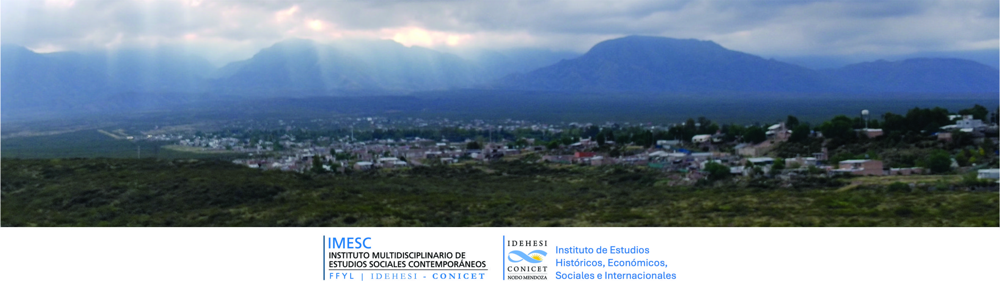

Los datos que se presentan a continuación provienen de una encuesta realizada por integrantes del Instituto Multidisciplinario de Estudios Sociales Contemporáneos (IMESC-IDEHESI-CONICET-UNCuyo) en articulación con la Municipalidad de Luján de Cuyo. Los resultados brindan información sobre la percepción ambiental de habitantes de Vertientes del Piedemonte, Luján de Cuyo, así como sobre las prácticas que desarrollan los residentes para prevenir o mitigar incendios. Esta información permite continuar trabajando en la caracterización del riesgo de incendios en el área y será utilizada para la elaboración de informes destinados a stakeholders de la Municipalidad y otras instituciones, así como para trabajos académicos.
Análisis de 148 respuestas
👇 Hacé clic en cada categoría para explorar los resultados de esa sección
La gestión del riesgo de incendios en Vertientes del Pedemonte, Luján de Cuyo, Mendoza, requiere un esfuerzo coordinado entre múltiples actores:
Vos también podés participar en la elaboración del plan, si conocés información relevante sobre incendios, zonas de riesgo u otro dato que creas importante, escribinos:
Romina G. Sales
rsales@conicet.gov.ar